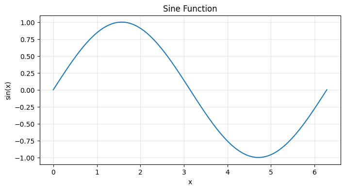
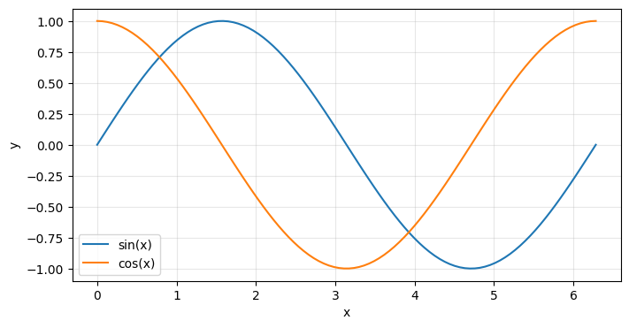
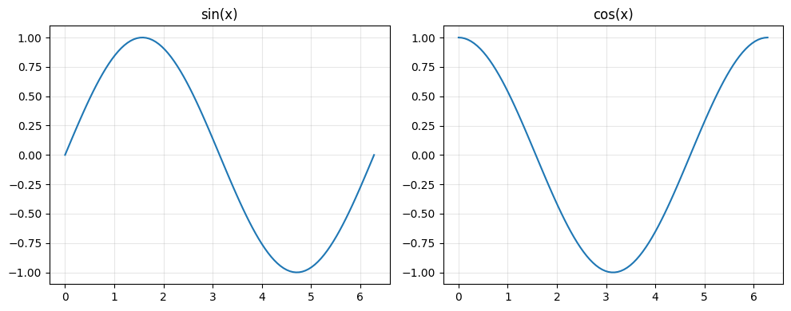
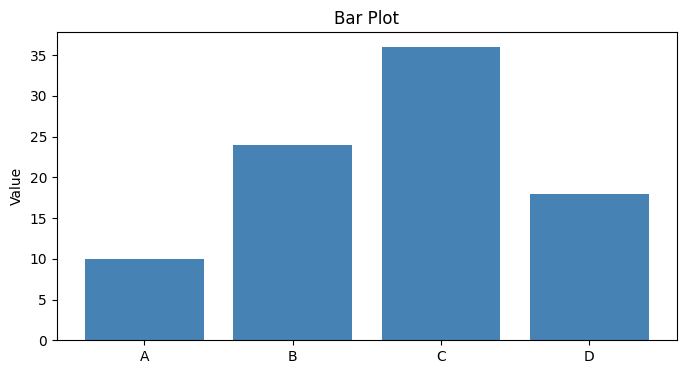
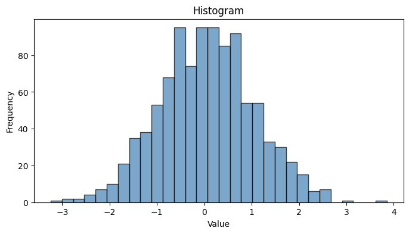
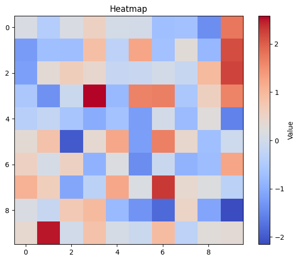

# Python: Interpreted
# Save as hello.py, then run: python hello.py
x = 5
print(x * 2)10This is not a beginner’s tutorial. This guide assumes you already understand programming concepts: loops, functions, data structures. What you may not have is a deep, precise understanding of how Python actually works and how to harness it effectively for numerical computing.
This guide builds that mental model—from practical environment setup, through language mechanics, to the powerful numerical libraries (NumPy, SciPy) and visualization tools (Matplotlib) that form the backbone of computational science.
By the end, you will understand not just what Python code does, but why it works that way.
This guide follows a carefully designed progression:
Each section builds on the previous. Each concept is followed immediately by executable code so you can experiment and understand interactively.
Throughout this guide, you will see explanation cells followed by code cells. This is intentional. Theory without practice is hollow. Practice without theory is hollow too. They are integrated here—read, then run, then modify, then understand.
All code examples are self-contained. You can modify them, break them, extend them. That experimentation is where learning happens.
Before you write numerical code, you need to understand the language itself. Not superficially—but at a level where you can predict behavior, avoid common pitfalls, and write efficient code.
This part builds that foundation.
Python is a high-level, interpreted programming language created in 1991. The crucial word here is interpreted: when you write Python code, you run it immediately. There is no separate compilation step. The interpreter reads your code line by line and executes it.
This matters for your work because: - You get immediate feedback (great for exploration) - Rapid prototyping is natural - The same code runs on any machine with Python installed
For a more complete guide on Python: https://cs.shivi.io/03-Teaching/Python/A-Guide-to-Python
Let us see the difference between an interpreted language (Python) and a compiled language (like C):
# Python: Interpreted
# Save as hello.py, then run: python hello.py
x = 5
print(x * 2)10Compare to C, which requires separate compilation:
// C: Compiled
#include <stdio.h>
int main() {
int x = 5;
printf("%d
", x * 2);
return 0;
}
// Compile: gcc hello.c -o hello
// Run: ./helloIn Python, you skip the compilation step. Code runs immediately.
In this course, Python is not arbitrary. It is chosen because:
1. Numerical libraries exist. NumPy and SciPy provide efficient, well-tested implementations of algorithms you need: linear algebra, optimization, integration, statistics.
2. You can focus on algorithms, not language mechanics. Python is readable. You write what you mean. There are no pointer dereferencing, memory management headaches, or verbose boilerplate.
3. Heavy computations run fast. The numerical libraries are written in C and Fortran. Python is the orchestration layer. You get both readability AND performance.
4. Visualization is built-in. Matplotlib makes plotting natural and quick.
Let us verify the speed claim. Here is NumPy versus plain Python:
import numpy as np
import time
# Pure Python: multiply 1 million numbers by 2
n = 1_000_000
python_list = list(range(n))
start = time.time()
result_py = [x * 2 for x in python_list]
time_py = time.time() - start
# NumPy: same operation
numpy_array = np.arange(n)
start = time.time()
result_np = numpy_array * 2
time_np = time.time() - start
print(f'Python list: {time_py:.4f} seconds')
print(f'NumPy array: {time_np:.4f} seconds')
print(f'Speedup: {time_py / time_np:.0f}x faster')Python list: 0.0387 seconds
NumPy array: 0.0031 seconds
Speedup: 12x fasterThe speedup is real. This is why we use NumPy for large-scale numerical work.
There are three ways:
1. Interactive REPL (Read-Eval-Print Loop)
$ python
>>> x = 5
>>> print(x * 2)
10Useful for quick experiments and debugging.
2. Scripts (.py files)
$ python my_script.pyFor organized, repeatable code.
3. Jupyter Notebooks (this format) Combines text, code, and visualizations. Perfect for exploration, teaching, and reproducible research.
In this course, we use Jupyter notebooks. Code cells can be executed individually, and you can see results immediately. This is the environment you are in now.
Python is dynamically typed. You do not declare types in advance. The interpreter figures out what type a value is at runtime. This is different from Java or C++, where you must declare: int x = 5;
In Python:
x = 5
y = 3.14
z = 'hello'
flag = True
print(type(x))
print(type(y))
print(type(z))
print(type(flag))<class 'int'>
<class 'float'>
<class 'str'>
<class 'bool'>The interpreter inferred the types: int, float, str, bool. This flexibility is powerful and concise. The tradeoff is that type errors only appear at runtime, not during a compile phase.
In Python, integers do not overflow. You can compute absurdly large numbers:
n = 2 ** 100
print(f'2^100 = {n}')
print(f'Number of digits: {len(str(n))}')2^100 = 1267650600228229401496703205376
Number of digits: 31Compare this to C or Java, where int has fixed limits. Python integers scale automatically.
Floats are 64-bit numbers following the IEEE 754 standard. This means they exhibit rounding errors:
x = 0.1 + 0.2
print(f'0.1 + 0.2 = {x}')
print(f'Is it equal to 0.3? {x == 0.3}')0.1 + 0.2 = 0.30000000000000004
Is it equal to 0.3? FalseThis is not a Python bug. It is how floating-point arithmetic works on all computers. When comparing floats, always use math.isclose():
import math
x = 0.1 + 0.2
print(f'math.isclose(x, 0.3): {math.isclose(x, 0.3)}')math.isclose(x, 0.3): TrueThis is crucial for numerical methods. Small rounding errors accumulate. Understanding them is essential.
Strings are immutable sequences of Unicode characters:
s = 'Numerical Methods'
print(f'First character: {s[0]}')
print(f'Last character: {s[-1]}')
print(f'Slice [0:10]: {s[0:10]}')
print(f'Reversed: {s[::-1]}')First character: N
Last character: s
Slice [0:10]: Numerical
Reversed: sdohteM laciremuNImmutable means you cannot modify a string in place. Every operation creates a new string.
Booleans have two values. But Python also has a concept of truthiness—any value can be evaluated as true or false:
# Falsy values: False, None, 0, 0.0, '', [], {}
# Truthy values: everything else
values = [0, [], '', None, 1, [1,2], 'hello']
for v in values:
if v:
print(f'{repr(v):15} is truthy')
else:
print(f'{repr(v):15} is falsy')0 is falsy
[] is falsy
'' is falsy
None is falsy
1 is truthy
[1, 2] is truthy
'hello' is truthyThis is used implicitly throughout Python. Understanding truthiness prevents subtle bugs.
Unlike Java or C++, Python has native support for complex numbers:
z = 3 + 4j # note: 'j' for imaginary unit, not 'i'
print(f'z = {z}')
print(f'Real part: {z.real}')
print(f'Imaginary part: {z.imag}')
print(f'Magnitude: {abs(z)}')z = (3+4j)
Real part: 3.0
Imaginary part: 4.0
Magnitude: 5.0This is useful in numerical methods: eigenvalues, FFTs, differential equations often involve complex numbers.
A list is a mutable, ordered collection. It is Python’s closest equivalent to an array:
nums = [10, 20, 30]
print(f'Original: {nums}')
nums.append(40)
print(f'After append(40): {nums}')
nums[1] = 99
print(f'After nums[1] = 99: {nums}')Original: [10, 20, 30]
After append(40): [10, 20, 30, 40]
After nums[1] = 99: [10, 99, 30, 40]Lists support indexing and slicing:
nums = [10, 20, 30, 40, 50]
print(f'nums[0]: {nums[0]}')
print(f'nums[-1]: {nums[-1]}')
print(f'nums[1:4]: {nums[1:4]}')
print(f'nums[::-1]: {nums[::-1]}')nums[0]: 10
nums[-1]: 50
nums[1:4]: [20, 30, 40]
nums[::-1]: [50, 40, 30, 20, 10]A tuple is like a list, but immutable (cannot be modified):
pt = (3, 4)
print(f'Tuple: {pt}')
x, y = pt # unpacking
print(f'Unpacked: x={x}, y={y}')
# Try to modify (will fail)
try:
pt[0] = 5
except TypeError as e:
print(f'Error: {e}')Tuple: (3, 4)
Unpacked: x=3, y=4
Error: 'tuple' object does not support item assignmentTuples are used for returning multiple values, ensuring data integrity, and as dictionary keys.
A dictionary maps keys to values. It is implemented as a hash map (very fast lookup):
scores = {'Alice': 10, 'Bob': 9, 'Carol': 8}
print(f'scores["Alice"]: {scores["Alice"]}')
scores['Dave'] = 7
print(f'After adding Dave: {scores}')
print(f'Keys: {list(scores.keys())}')
print(f'Values: {list(scores.values())}')scores["Alice"]: 10
After adding Dave: {'Alice': 10, 'Bob': 9, 'Carol': 8, 'Dave': 7}
Keys: ['Alice', 'Bob', 'Carol', 'Dave']
Values: [10, 9, 8, 7]Key operations are O(1) on average—very fast, regardless of dictionary size.
A set stores unique elements with fast membership testing:
A = {1, 2, 3, 3, 4} # duplicates are removed
B = {3, 4, 5}
print(f'A: {A}')
print(f'B: {B}')
print(f'Union (A | B): {A | B}')
print(f'Intersection (A & B): {A & B}')
print(f'Difference (A - B): {A - B}')A: {1, 2, 3, 4}
B: {3, 4, 5}
Union (A | B): {1, 2, 3, 4, 5}
Intersection (A & B): {3, 4}
Difference (A - B): {1, 2}Sets are useful for removing duplicates and fast membership tests.
Programs need to make decisions and repeat actions. Python provides conditionals, loops, and comprehensions for this.
x = 10
if x > 0:
print('Positive')
elif x == 0:
print('Zero')
else:
print('Negative')PositiveIndentation is syntax in Python. It defines code blocks. Use 4 spaces consistently.
Any value can be used in a condition. The falsy values are: False, None, 0, 0.0, empty string, empty list, empty dict. Everything else is truthy.
# Demonstrate truthiness
values = [[], [1], 0, 1, '', 'hello']
for v in values:
if v:
print(f'{repr(v):20} -> truthy')
else:
print(f'{repr(v):20} -> falsy')[] -> falsy
[1] -> truthy
0 -> falsy
1 -> truthy
'' -> falsy
'hello' -> truthy# while loop
i = 0
while i < 5:
print(i, end=' ')
i += 1
print()0 1 2 3 4 # for loop over a range
for i in range(5):
print(i, end=' ')
print()0 1 2 3 4 # for loop over a sequence
names = ['Alice', 'Bob', 'Carol']
for name in names:
print(name)Alice
Bob
Carol# Find first multiple of 7
for n in range(1, 101):
if n % 7 == 0:
print(f'First multiple of 7: {n}')
breakFirst multiple of 7: 7# Skip even numbers
for n in range(10):
if n % 2 == 0:
continue
print(f'{n} is odd', end=' ')
print()1 is odd 3 is odd 5 is odd 7 is odd 9 is odd # List comprehension: create list of squares
squares = [x**2 for x in range(5)]
print(f'Squares: {squares}')
# With condition
evens_squared = [x**2 for x in range(10) if x % 2 == 0]
print(f'Evens squared: {evens_squared}')Squares: [0, 1, 4, 9, 16]
Evens squared: [0, 4, 16, 36, 64]# Dict comprehension
square_dict = {x: x**2 for x in range(5)}
print(f'Dict: {square_dict}')Dict: {0: 0, 1: 1, 2: 4, 3: 9, 4: 16}# Set comprehension
unique_squares = {x**2 for x in [-2, -1, 0, 1, 2]}
print(f'Unique squares: {unique_squares}')Unique squares: {0, 1, 4}Comprehensions are more concise, more readable, and often faster than explicit loops. Use them.
# enumerate: index + value
for i, name in enumerate(['Ada', 'Alan', 'Grace']):
print(f'{i}: {name}')0: Ada
1: Alan
2: Grace# zip: parallel iteration
names = ['Ada', 'Alan', 'Grace']
scores = [10, 7, 9]
for name, score in zip(names, scores):
print(f'{name} -> {score}')Ada -> 10
Alan -> 7
Grace -> 9# any and all
nums = [2, 4, 6, 8]
print(f'any(n > 5 for n in nums): {any(n > 5 for n in nums)}')
print(f'all(n > 0 for n in nums): {all(n > 0 for n in nums)}')any(n > 5 for n in nums): True
all(n > 0 for n in nums): TrueFunctions let you group code into reusable blocks. In Python, functions are first-class objects: you can pass them around, store them in variables, and create them at runtime.
def greet(name):
return f'Hello, {name}!'
result = greet('Alice')
print(result)Hello, Alice!def power(base, exponent=2):
return base ** exponent
print(power(3)) # uses default exponent=2
print(power(3, 4)) # override default
print(power(exponent=3, base=2)) # keyword arguments9
81
8def add_many(*args):
return sum(args)
print(add_many(1, 2, 3, 4, 5))15def print_kwargs(**kwargs):
for key, value in kwargs.items():
print(f'{key} = {value}')
print_kwargs(name='Alice', age=30, city='Zurich')name = Alice
age = 30
city = Zurichx = 'global'
def outer():
y = 'outer'
def inner():
z = 'inner'
print(f'{x}, {y}, {z}')
inner()
outer()global, outer, innerVariables are looked up in this order: local scope → enclosing scope → global scope → built-in scope. This is called the LEGB rule.
# Lambda: shorthand for simple functions
square = lambda x: x**2
print(square(5))
# Useful with map and filter
nums = [1, 2, 3, 4, 5]
squared = list(map(lambda x: x**2, nums))
print(squared)25
[1, 4, 9, 16, 25]However, list comprehensions are usually more Pythonic than lambda + map/filter.
# In a script, this would read user input:
# name = input('Your name: ')
# For this notebook, we simulate:
name = 'Alice'
print(f'Hello, {name}!')Hello, Alice!name = 'Bob'
score = 9.8765
print(f'{name} scored {score:.2f}')
print(f'{name} scored {score:.4f}')Bob scored 9.88
Bob scored 9.8765F-strings (formatted string literals) are the modern way. They are concise, readable, and fast.
# Write to file
with open('/tmp/example.txt', 'w') as f:
f.write('Line 1\n')
f.write('Line 2\n')
# Read from file
with open('/tmp/example.txt', 'r') as f:
content = f.read()
print(content)Line 1
Line 2
The with statement ensures the file is properly closed, even if an error occurs. Always use with.
import math
print(f'pi = {math.pi:.5f}')
print(f'sqrt(2) = {math.sqrt(2):.5f}')pi = 3.14159
sqrt(2) = 1.41421from math import sqrt, pi
print(f'sqrt(pi) = {sqrt(pi):.5f}')sqrt(pi) = 1.77245import numpy as np
arr = np.array([1, 2, 3])
print(f'Array: {arr}')Array: [1 2 3]Prefer import math; math.func() over from math import * to avoid polluting the namespace.
Classes let you bundle data and methods together. This is useful for modeling complex concepts.
class Point:
def __init__(self, x, y):
self.x = x
self.y = y
def __repr__(self):
return f'Point({self.x}, {self.y})'
p = Point(3, 4)
print(p)Point(3, 4)__init__ is the constructor. __repr__ is the string representation for debugging.
class Point:
def __init__(self, x, y):
self.x = x
self.y = y
def distance_from_origin(self):
return (self.x**2 + self.y**2)**0.5
p = Point(3, 4)
print(f'Distance: {p.distance_from_origin()}')Distance: 5.0class Shape:
def __init__(self, name):
self.name = name
class Circle(Shape):
def __init__(self, name, radius):
super().__init__(name)
self.radius = radius
def area(self):
return 3.14159 * self.radius**2
c = Circle('My Circle', 5)
print(f'{c.name}: area = {c.area():.2f}')My Circle: area = 78.54From this point forward, you are doing numerical computing. The tool for this is arrays—not Python lists.
Arrays are: - Fast: Implemented in C, vectorized operations - Concise: Mathematical notation maps directly to code - Memory-efficient: Dense storage, no pointer overhead
NumPy is the array library. It is the foundation for all numerical work in Python.
import numpy as np
import time
n = 1_000_000
# Python lists
python_list = list(range(n))
start = time.time()
result_py = [x * 2 for x in python_list]
time_py = time.time() - start
# NumPy arrays
numpy_array = np.arange(n)
start = time.time()
result_np = numpy_array * 2
time_np = time.time() - start
print(f'Python list: {time_py:.4f}s')
print(f'NumPy array: {time_np:.4f}s')
print(f'Speedup: {time_py/time_np:.0f}x')Python list: 0.0437s
NumPy array: 0.0020s
Speedup: 22xThe speedup is real. This is not a small optimization—it is the difference between code that is usable and code that times out.
import numpy as np
# Python list: * means repetition
list_result = [1, 2, 3] * 2
print(f'List * 2: {list_result}')
# NumPy array: * means element-wise multiplication
array = np.array([1, 2, 3])
array_result = array * 2
print(f'Array * 2: {array_result}')List * 2: [1, 2, 3, 1, 2, 3]
Array * 2: [2 4 6]In NumPy, operations work element-wise and broadcast automatically. This is crucial for numerical methods.
import numpy as np
# From list
arr = np.array([1, 2, 3, 4])
print(f'Array: {arr}')
print(f'dtype: {arr.dtype}')
# Specify dtype
arr_float = np.array([1, 2, 3], dtype=np.float32)
print(f'Float32: {arr_float}')Array: [1 2 3 4]
dtype: int64
Float32: [1. 2. 3.]# Zeros and ones
z = np.zeros((2, 3))
print(f'Zeros shape (2,3):\n{z}')
o = np.ones((2, 3))
print(f'Ones:\n{o}')
# Identity matrix
i = np.eye(3)
print(f'Identity (3x3):\n{i}')Zeros shape (2,3):
[[0. 0. 0.]
[0. 0. 0.]]
Ones:
[[1. 1. 1.]
[1. 1. 1.]]
Identity (3x3):
[[1. 0. 0.]
[0. 1. 0.]
[0. 0. 1.]]# arange: specify step
a = np.arange(0, 10, 2)
print(f'arange(0, 10, 2): {a}')
# linspace: specify count
l = np.linspace(0, 10, 5)
print(f'linspace(0, 10, 5): {l}')arange(0, 10, 2): [0 2 4 6 8]
linspace(0, 10, 5): [ 0. 2.5 5. 7.5 10. ]arange is useful when you know the step size. linspace is useful when you know how many points you want.
np.random.seed(42) # for reproducibility
# Uniform [0, 1)
uniform = np.random.rand(2, 3)
print(f'Uniform random (2x3):\n{uniform}')
# Standard normal N(0,1)
normal = np.random.randn(2, 3)
print(f'Normal random:\n{normal}')Uniform random (2x3):
[[0.37454012 0.95071431 0.73199394]
[0.59865848 0.15601864 0.15599452]]
Normal random:
[[ 1.57921282 0.76743473 -0.46947439]
[ 0.54256004 -0.46341769 -0.46572975]]arr = np.array([[1, 2, 3], [4, 5, 6]])
print(f'Array:')
print(arr)
print(f'shape: {arr.shape}')
print(f'dtype: {arr.dtype}')
print(f'ndim: {arr.ndim}')
print(f'size: {arr.size}')
print(f'nbytes: {arr.nbytes}')Array:
[[1 2 3]
[4 5 6]]
shape: (2, 3)
dtype: int64
ndim: 2
size: 6
nbytes: 48These attributes tell you everything about the array.
arr = np.array([10, 20, 30, 40, 50])
print(f'arr[0]: {arr[0]}')
print(f'arr[2]: {arr[2]}')
print(f'arr[-1]: {arr[-1]}')arr[0]: 10
arr[2]: 30
arr[-1]: 50arr = np.arange(0, 10)
print(f'arr[1:4]: {arr[1:4]}')
print(f'arr[:3]: {arr[:3]}')
print(f'arr[3:]: {arr[3:]}')
print(f'arr[::2]: {arr[::2]}')
print(f'arr[::-1]: {arr[::-1]}')arr[1:4]: [1 2 3]
arr[:3]: [0 1 2]
arr[3:]: [3 4 5 6 7 8 9]
arr[::2]: [0 2 4 6 8]
arr[::-1]: [9 8 7 6 5 4 3 2 1 0]Slicing syntax is [start:stop:step]. Stop is exclusive. Negative indices count from the end.
mat = np.array([[1, 2, 3], [4, 5, 6], [7, 8, 9]])
print(f'mat[0, 0]: {mat[0, 0]}')
print(f'mat[2, 2]: {mat[2, 2]}')
print(f'mat[1, :]: {mat[1, :]}')
print(f'mat[:, 1]: {mat[:, 1]}')
print(f'mat[:2, 1:3]:\n{mat[:2, 1:3]}')mat[0, 0]: 1
mat[2, 2]: 9
mat[1, :]: [4 5 6]
mat[:, 1]: [2 5 8]
mat[:2, 1:3]:
[[2 3]
[5 6]]arr = np.array([1, 2, 3, 4, 5, 6, 7, 8, 9, 10])
mask = arr > 5
print(f'arr > 5: {mask}')
print(f'arr[arr > 5]: {arr[arr > 5]}')
# Multiple conditions
mask2 = (arr > 3) & (arr < 8)
print(f'3 < arr < 8: {arr[mask2]}')arr > 5: [False False False False False True True True True True]
arr[arr > 5]: [ 6 7 8 9 10]
3 < arr < 8: [4 5 6 7]Boolean indexing is powerful for filtering.
a = np.array([1, 2, 3])
b = np.array([4, 5, 6])
print(f'a + b: {a + b}')
print(f'a * b: {a * b}')
print(f'b - a: {b - a}')
print(f'a ** 2: {a ** 2}')a + b: [5 7 9]
a * b: [ 4 10 18]
b - a: [3 3 3]
a ** 2: [1 4 9]Look at: https://www.youtube.com/watch?v=oG1t3qlzq14
arr = np.array([1, 2, 3, 4])
print(f'arr + 10: {arr + 10}')
print(f'arr * 2: {arr * 2}')
mat = np.array([[1, 2, 3], [4, 5, 6], [7, 8, 9]])
vec = np.array([10, 20, 30])
print(f'Matrix + vector (broadcasts to each row):')
print(mat + vec)arr + 10: [11 12 13 14]
arr * 2: [2 4 6 8]
Matrix + vector (broadcasts to each row):
[[11 22 33]
[14 25 36]
[17 28 39]]Broadcasting is automatic shape alignment. This is how NumPy avoids explicit loops.
arr = np.array([1, 2, 3, 4])
print(f'sqrt: {np.sqrt(arr)}')
print(f'exp: {np.exp(arr)}')
print(f'sin: {np.sin(arr)}')
print(f'log: {np.log(arr)}')sqrt: [1. 1.41421356 1.73205081 2. ]
exp: [ 2.71828183 7.3890561 20.08553692 54.59815003]
sin: [ 0.84147098 0.90929743 0.14112001 -0.7568025 ]
log: [0. 0.69314718 1.09861229 1.38629436]Universal functions apply element-wise and are very fast.
arr = np.array([1, 2, 3, 4, 5])
print(f'sum: {arr.sum()}')
print(f'mean: {arr.mean()}')
print(f'std: {arr.std():.2f}')
print(f'min: {arr.min()}')
print(f'max: {arr.max()}')
mat = np.array([[1, 2, 3], [4, 5, 6]])
print(f'sum(axis=0): {mat.sum(axis=0)}')
print(f'sum(axis=1): {mat.sum(axis=1)}')sum: 15
mean: 3.0
std: 1.41
min: 1
max: 5
sum(axis=0): [5 7 9]
sum(axis=1): [ 6 15]Reductions collapse arrays to scalars or smaller arrays.
a = np.array([1, 2, 3])
b = np.array([4, 5, 6])
print(f'Dot product: {np.dot(a, b)}')
A = np.array([[1, 2], [3, 4]])
B = np.array([[5, 6], [7, 8]])
print(f'Matrix multiplication (A @ B):')
print(A @ B)Dot product: 32
Matrix multiplication (A @ B):
[[19 22]
[43 50]]The @ operator is matrix multiplication. It is not element-wise multiplication.
arr = np.arange(12)
print(f'Flat: {arr}')
reshaped = arr.reshape((3, 4))
print(f'Reshaped (3x4):\n{reshaped}')
flat = reshaped.flatten()
print(f'Flattened back: {flat}')Flat: [ 0 1 2 3 4 5 6 7 8 9 10 11]
Reshaped (3x4):
[[ 0 1 2 3]
[ 4 5 6 7]
[ 8 9 10 11]]
Flattened back: [ 0 1 2 3 4 5 6 7 8 9 10 11]a = np.array([1, 2, 3])
b = np.array([4, 5, 6])
concat = np.concatenate([a, b])
print(f'Concatenate: {concat}')
vstack = np.vstack([a, b])
print(f'vstack:\n{vstack}')
hstack = np.hstack([a, b])
print(f'hstack: {hstack}')Concatenate: [1 2 3 4 5 6]
vstack:
[[1 2 3]
[4 5 6]]
hstack: [1 2 3 4 5 6]arr = np.array([10, 20, 30, 15, 5, 25])
print(f'argmax: {np.argmax(arr)}')
print(f'argmin: {np.argmin(arr)}')
mask = arr > 15
indices = np.where(mask)
print(f'where(arr > 15): {indices[0]}')
unique_vals, counts = np.unique(arr, return_counts=True)
print(f'unique: {unique_vals}')
print(f'counts: {counts}')argmax: 2
argmin: 4
where(arr > 15): [1 2 5]
unique: [ 5 10 15 20 25 30]
counts: [1 1 1 1 1 1]# Ax = b
# 3x + y = 9
# x + 2y = 8
A = np.array([[3, 1], [1, 2]], dtype=float)
b = np.array([9, 8], dtype=float)
x = np.linalg.solve(A, b)
print(f'Solution: x = {x}')
print(f'Verification: A @ x = {A @ x}')Solution: x = [2. 3.]
Verification: A @ x = [9. 8.]A = np.array([[4, -2], [-2, 4]], dtype=float)
eigenvalues, eigenvectors = np.linalg.eig(A)
print(f'Eigenvalues: {eigenvalues}')
print(f'Eigenvectors:\n{eigenvectors}')Eigenvalues: [6. 2.]
Eigenvectors:
[[ 0.70710678 0.70710678]
[-0.70710678 0.70710678]]A = np.array([[1, 2], [3, 4], [5, 6]], dtype=float)
U, s, Vt = np.linalg.svd(A)
print(f'Singular values: {s}')
print(f'U shape: {U.shape}')
print(f'Vt shape: {Vt.shape}')Singular values: [9.52551809 0.51430058]
U shape: (3, 3)
Vt shape: (2, 2)A = np.array([[1, 2, 3], [4, 5, 6], [7, 8, 9]], dtype=float)
print(A)
rank = np.linalg.matrix_rank(A)
print(f'Rank: {rank}')
B = np.array([[1, 2], [3, 4]], dtype=float)
print(B)
det = np.linalg.det(B)
print(f'Determinant: {det:.2f}')
inv = np.linalg.inv(B)
print(f'Inverse:\n{inv}')[[1. 2. 3.]
[4. 5. 6.]
[7. 8. 9.]]
Rank: 2
[[1. 2.]
[3. 4.]]
Determinant: -2.00
Inverse:
[[-2. 1. ]
[ 1.5 -0.5]]NumPy gives you arrays and basic linear algebra. SciPy builds on NumPy with specialized algorithms:
Think of it this way: NumPy is the foundation. SciPy is the toolkit.
from scipy import linalg
import numpy as np
A = np.array([[1, 2], [3, 4]], dtype=float)
P, L, U = linalg.lu(A)
print(f'L (lower triangular):\n{L}')
print(f'U (upper triangular):\n{U}')L (lower triangular):
[[1. 0. ]
[0.33333333 1. ]]
U (upper triangular):
[[3. 4. ]
[0. 0.66666667]]Q, R = linalg.qr(A)
print(f'Q (orthogonal):\n{Q}')
print(f'R (upper triangular):\n{R}')
print(f'Verification (Q @ R):\n{Q @ R}')Q (orthogonal):
[[-0.31622777 -0.9486833 ]
[-0.9486833 0.31622777]]
R (upper triangular):
[[-3.16227766 -4.42718872]
[ 0. -0.63245553]]
Verification (Q @ R):
[[1. 2.]
[3. 4.]]from scipy.optimize import minimize
def f(x):
return (x - 3)**2 + 2*np.sin(x)
result = minimize(f, x0=0)
print(f'Minimum at x = {result.x[0]:.4f}')
print(f'Function value: {result.fun:.4f}')Minimum at x = 3.7944
Function value: -0.5838Many numerical methods reduce to optimization. SciPy provides solvers for this.
from scipy.integrate import quad
def integrand(x):
return np.exp(-x**2)
result, error = quad(integrand, 0, 1)
print(f'Integral of exp(-x^2) from 0 to 1: {result:.6f}')
print(f'Estimated error: {error:.2e}')Integral of exp(-x^2) from 0 to 1: 0.746824
Estimated error: 8.29e-15from scipy.integrate import odeint
# dy/dt = -2y, y(0) = 1
def dydt(y, t):
return -2 * y
t = np.linspace(0, 2, 100)
y = odeint(dydt, y0=1, t=t)
print(f'y(0) = {y[0, 0]:.4f}')
print(f'y(1) = {y[50, 0]:.4f}')
print(f'y(2) = {y[-1, 0]:.4f}')y(0) = 1.0000
y(1) = 0.1326
y(2) = 0.0183The exact solution is y(t) = exp(-2t).
from scipy.interpolate import interp1d
# Data points
x = np.array([0, 1, 2, 3, 4])
y = np.array([0, 1, 4, 9, 16])
# Create interpolator
f = interp1d(x, y, kind='cubic')
# Evaluate at new points
x_new = np.array([0.5, 1.5, 2.5, 3.5])
y_new = f(x_new)
print(f'Interpolated values: {y_new}')Interpolated values: [ 0.25 2.25 6.25 12.25]from scipy import stats
# Generate normal data
data = np.random.randn(1000)
# Fit a normal distribution
mean, std = stats.norm.fit(data)
print(f'Fitted: mean={mean:.3f}, std={std:.3f}')
# Hypothesis test: is mean zero?
t_stat, p_value = stats.ttest_1samp(data, 0)
print(f't-statistic: {t_stat:.3f}')
print(f'p-value: {p_value:.3f}')Fitted: mean=0.022, std=0.979
t-statistic: 0.716
p-value: 0.474import matplotlib.pyplot as plt
x = np.linspace(0, 2*np.pi, 100)
y = np.sin(x)
plt.figure(figsize=(8, 4))
plt.plot(x, y)
plt.xlabel('x')
plt.ylabel('sin(x)')
plt.title('Sine Function')
plt.grid(True, alpha=0.3)
plt.show()
x = np.linspace(0, 2*np.pi, 100)
plt.figure(figsize=(8, 4))
plt.plot(x, np.sin(x), label='sin(x)')
plt.plot(x, np.cos(x), label='cos(x)')
plt.xlabel('x')
plt.ylabel('y')
plt.legend()
plt.grid(True, alpha=0.3)
plt.show()
fig, axes = plt.subplots(1, 2, figsize=(10, 4))
x = np.linspace(0, 2*np.pi, 100)
axes[0].plot(x, np.sin(x))
axes[0].set_title('sin(x)')
axes[0].grid(True, alpha=0.3)
axes[1].plot(x, np.cos(x))
axes[1].set_title('cos(x)')
axes[1].grid(True, alpha=0.3)
plt.tight_layout()
plt.show()
x = np.linspace(0, 2*np.pi, 100)
plt.figure(figsize=(10, 4))
plt.plot(x, np.sin(x), 'b-', label='solid blue')
plt.plot(x, np.cos(x), 'r--', label='dashed red')
plt.plot(x, np.tan(x), 'g:', label='dotted green')
plt.ylim(-2, 2)
plt.legend()
plt.grid(True, alpha=0.3)
plt.show()
x = np.array([1, 2, 3, 4, 5])
y = np.array([1, 4, 9, 16, 25])
plt.figure(figsize=(8, 4))
plt.plot(x, y, 'o-', markersize=8, label='circles')
plt.plot(x+0.1, y+10, 's-', markersize=6, label='squares')
plt.plot(x+0.2, y+20, '^-', markersize=6, label='triangles')
plt.legend()
plt.grid(True, alpha=0.3)
plt.show()
np.random.seed(42)
x = np.random.randn(100)
y = 2*x + np.random.randn(100)
plt.figure(figsize=(8, 4))
plt.scatter(x, y, alpha=0.6, s=50)
plt.xlabel('x')
plt.ylabel('y')
plt.title('Scatter Plot')
plt.grid(True, alpha=0.3)
plt.show()
categories = ['A', 'B', 'C', 'D']
values = [10, 24, 36, 18]
plt.figure(figsize=(8, 4))
plt.bar(categories, values, color='steelblue')
plt.ylabel('Value')
plt.title('Bar Plot')
plt.show()
data = np.random.randn(1000)
plt.figure(figsize=(8, 4))
plt.hist(data, bins=30, color='steelblue', edgecolor='black', alpha=0.7)
plt.xlabel('Value')
plt.ylabel('Frequency')
plt.title('Histogram')
plt.show()
data = np.random.randn(10, 10)
plt.figure(figsize=(8, 6))
plt.imshow(data, cmap='coolwarm')
plt.colorbar(label='Value')
plt.title('Heatmap')
plt.show()